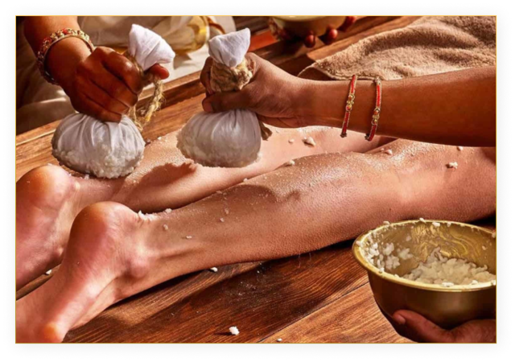
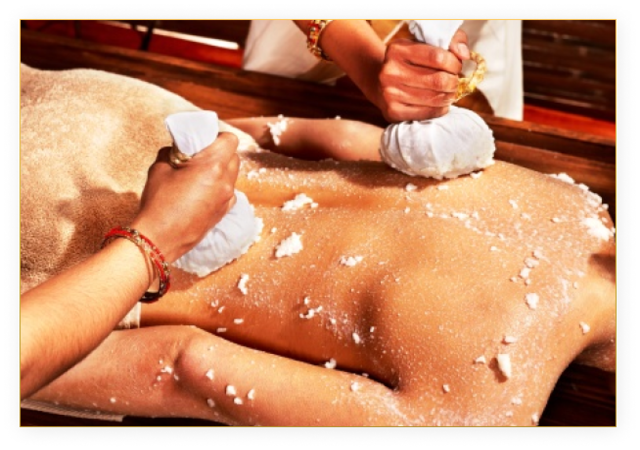

Navarakizhi is a deeply refreshing and revitalizing therapy that is developed as a specialized traditional treatment in the Indian state of Kerala. The main ingredient in this Kizhi (poultice) is Navara rice. Navara is a medicinal variety of rice from Kerala that is used exclusively for treatments in Ayurveda.The Navara rice is cooked in a mixture of cow's milk and various herbal decoctions and tied into the poultice.
Being an immune-enhancing rejuvenation therapy, it is used to strengthen and nourish the muscles, joints, and soft tissues while providing tremendous relief from pain and tenderness.
The treatment begins with abhyangam (oil massage) followed by Amalaki Tala-dharana. A paste made by boiling amla in buttermilk is applied on the crown of the head and tied with a bandage. A well-like structure is made with the paste and filled with coolant oils like Chandanabala Lakshadi Tailam.
The Shashtika Shali Pinda Sweda procedure involves the application of heat to the body for more than an hour. The heat might affect the brain and the sense organs, so Amalaki Tala-dharana protects these organs by providing a cooling effect on the mind and body.
Navara Kizhi is performed by 4 attendants or masseurs (2 on each side of the body) who work in a synchronized manner. The poultices are dipped in the heated medicated milk and are rubbed and stroked on both sides of the patient’s body in a rhythmic way.
The strokes are given in a clockwise manner covering all the joints in the body in a downward direction from the nape of the neck to the lower back and from the hips towards the
The poultices are replaced with fresh warm ones once they cool.
This procedure must be performed continuously without any interruption. Each session of this procedure takes about 70 to 105 minutes while the duration of the treatment may vary from 7 to 21 days depending on the severity of the condition.
After the procedure, the poultices are opened and the rice is rubbed gently over the patient’s body for 10-15 minutes. This is wiped off with a tissue or sterile cloth.
The Tala-dharana is also slowly removed and the head is wiped off with a sterile cloth. The patient’s body is sponged with hot water to remove the oil from the body and head, followed by a hot water shower.